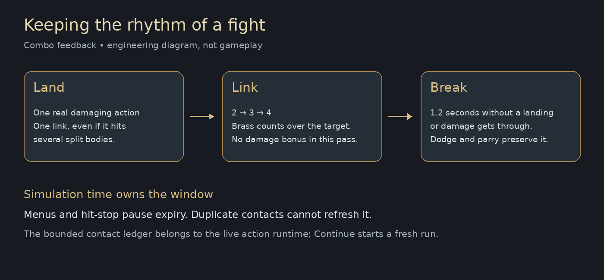
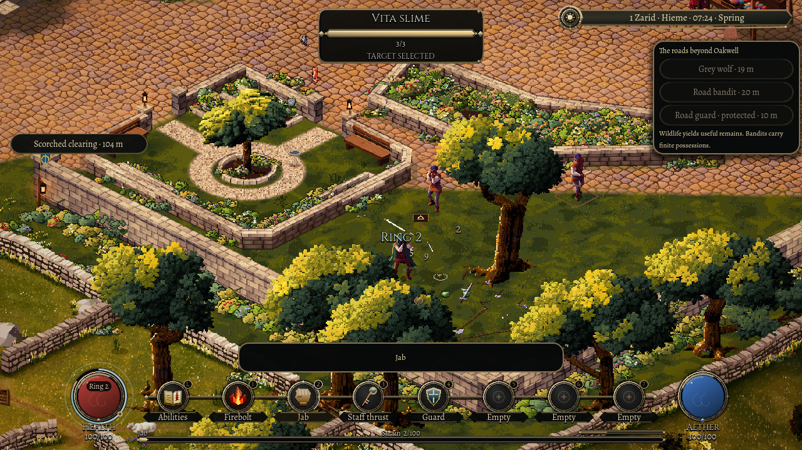

Finding the rhythm
A quick jab, a step away, another opening. A fight has a rhythm even before a spell enters it. The next town combat pass gives that rhythm a small, visible memory.
Consecutive landed actions now build a count above the target. The second link shows a brass two, then three, then four. The lettering grows a little brighter and larger as the run continues, with a limit so a long exchange does not cover the fight.

An opening is worth keeping
The count follows successful actions. A bare-handed jab counts just as a staff strike or a spell does. Catching several small slimes with one action still gives one link: the number is a memory of the fighter's rhythm, rather than a tally of bodies caught in a sweep.
There is a short space to find the next opening. After about a second and a fifth without a landing, the run ends. Taking damage breaks it too. A successful dodge or parry keeps the run alive, so answering a threat can belong to the same exchange as pressing forward.
Opening a peaceful menu pauses that little clock. So does the brief pause that gives a landed blow its weight. The count belongs to the fight's own time.

First, make the rhythm readable
This is a feedback pass. The count does not yet make a blow stronger, and casting does not spend it on a magical finisher. Those are later steps: the town first needs to show clearly what continued a run and what broke it.
There is something satisfying about seeing a small sequence take shape. It gives the existing punches, weapons and spells a shared thread, while leaving their costs, reach and consequences where they already belong.